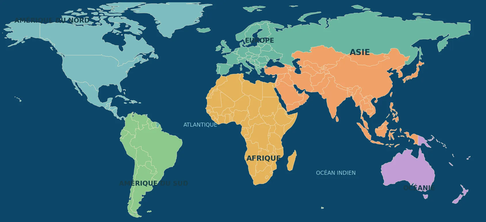

Un monde, des pays, des interdépendances
Explore 37 pays, compare leurs ressources et leurs relations, puis formule des hypothèses. Les fiches privilégient des mécanismes géopolitiques durables plutôt que des chiffres non vérifiés.
🌍 NOUVEAU · Mission mondiale : cinq pays, une chaîne de valeur →

🧭 LE GRAND ATLAS
37 pays · 5 grandes régions · des ressources, des alliances et des rivalités à comprendre
Carte de localisation : frontières simplifiées, non destinée à trancher les différends territoriaux.Fiches de synthèse pédagogiques, sans statistiques en temps réel. Les enjeux évoluent : confronte les affirmations aux sources institutionnelles et à leur date de publication. Pour approfondir : Banque mondiale, CNUCED, AIE.